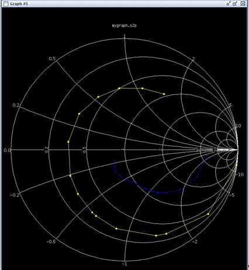

Smith Chart Tool
Smith Chart is a graphical tool that is widely used in solving problems with transmission lines and matching circuits in RF applications. Many parameters including impedances, admittances, reflection coefficients and etc. can be visualized using Smith Charts.
The Smith Chart is a graph type introduced in the Signal Analyzer. The Smith chart is plotted on the complex reflection coefficient plane in two dimensions. Since the reflection coefficient is always frequency dependent, the data trace in Smith Chart is actually 3-dimensional. Smith Chart grid is made up of circles and arcs representing real and imaginary parts of normalized impedance or normalized admittance, respectively. The following picture shows a typical Smith Chart plot in the Signal Analyzer tool.

Functional changes
- Introduced in SmarTest 7.0.3